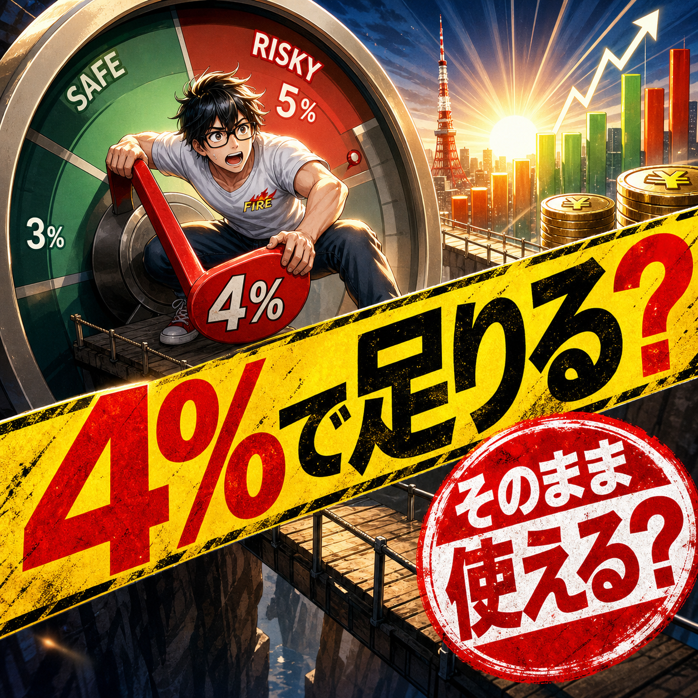

FIRE COLUMN
FIREの4%ルールとは？日本でそのまま使っていいのか経験者目線で考える

.png) RELATED ARTICLE
FIREしても株価が気になった僕が、投資との距離を見直した話
FIREを目指して投資を始めたのに、毎日株価を確認して落ち着かない。資産が増えている日も、もっと増やせる銘柄があるのではないかと考えてしまう。
wakuwaku-fire-git.pages.dev ↗
RELATED ARTICLE
FIREしても株価が気になった僕が、投資との距離を見直した話
FIREを目指して投資を始めたのに、毎日株価を確認して落ち着かない。資産が増えている日も、もっと増やせる銘柄があるのではないかと考えてしまう。
wakuwaku-fire-git.pages.dev ↗
 COMMUNITY
FIREを本音で話せる場所
ワクワクFIRE道。FIREや自由な人生を目指す人が交流できるコミュニティ。
community.camp-fire.jp ↗
COMMUNITY
FIREを本音で話せる場所
ワクワクFIRE道。FIREや自由な人生を目指す人が交流できるコミュニティ。
community.camp-fire.jp ↗
FIREの4%ルールは便利な目安ですが、数字を当てはめれば安心できる魔法ではありません。元の研究が何を検証したのか、日本の生活とどう違うのか、資産の上下を経験した僕が「使うならどこに注意するか」を整理します。
まいど！ワクワクFIREです。
「FIREするなら、資産を4%ずつ取り崩せばいい」
この話、FIREを調べたことがある人なら一度は見たことがあると思います。5000万円あれば年間200万円、6000万円なら年間240万円。数字だけを見ると、なんや、これで生活できる人ならFIREできるやん、と感じますよね。
ただ、4%ルールは「どんな人でも、どんな国でも、資産が減らない魔法の数字」ではありません。僕自身も、資産6000万円をひとつの区切りに会社を辞めました。でも、その後に分かったのは、取り崩し率を決めたら不安が消えるわけではない、ということでした。
この記事では、4%ルールの意味をいったん正確に整理したうえで、日本でそのまま使えるのか、僕ならどう考えるのかを話します。
FIREの4%ルールは何をする数字なのか
4%ルールは、FIRE開始時点の投資資産の4%を、最初の1年間の生活費として使う考え方です。たとえば投資資産が5000万円なら、最初の年に使える目安は200万円。6000万円なら240万円です。
ここで間違えやすいのが、毎年その時点の残高の4%を使う話ではないことです。もともとの取り崩し額を出発点にして、翌年以降は物価上昇に合わせて金額を調整する、という考え方が元になっています。残高が下がったから機械的に生活費を4%へ下げる、という単純なルールとはちょっと違います。
この研究の元になったのは、米国の過去の株式と債券のデータを使い、30年間取り崩しても資産が尽きにくかった割合を調べたものです。元の研究で示された数字は4.15%でしたが、広まりやすい形で4%ルールと呼ばれるようになりました。
大事なのは、これは未来を保証する制度ではなく、過去データから作った目安だという点です。過去にうまくいったから、これからも必ずうまくいく。そんな話ではないんよな。
4%なら、5000万円で年間200万円になる
計算だけなら簡単です。
| 投資資産 | 4%で計算した初年度の金額 |
|---|---|
| 3000万円 | 120万円 |
| 5000万円 | 200万円 |
| 6000万円 | 240万円 |
| 1億円 | 400万円 |
でも、ここで見るべきなのは右側の数字だけではありません。家賃込みで年間200万円なのか、持ち家で年間200万円なのか。独身なのか、夫婦なのか、子どもがいるのか。税金や社会保険料、医療費、家電の買い替え、旅行まで含めているのか。
同じ5000万円でも、毎月12万円で暮らせる人と、毎月30万円必要な人では、見える景色がまったく違います。4%という割合より先に、自分の年間支出を知る。ここを飛ばすと、数字だけ立派で生活が続かない、ということになりかねません。
30年間の想定は、若くFIREする人には短いかもしれない
4%ルールの「30年間」という前提も、かなり大きなポイントです。定年の少し前にリタイアするなら30年は長い期間ですが、30歳や40歳でFIREするなら、その後の人生は30年では終わりません。
僕が会社を辞めたのも30歳のときでした。資産6000万円という金額は、その当時の僕にとって大きな安心材料でしたが、「この先の何十年も絶対に働かなくていい」という意味ではありません。若く辞めるほど、相場の下落も、物価の上昇も、家族の変化も長く受けることになります。
だから若いFIREほど、4%をそのまま採用するかどうかを慎重に考えたほうがいい。3%にする、現金を厚めに持つ、足りない年だけ働く、住む場所や暮らし方を変えられるようにする。正解を一つに固定せず、逃げ道を用意しておくほうが、僕は現実的やと思っています。
日本で4%ルールをそのまま使えない理由
4%ルールの元データは米国の過去データです。日本で暮らすなら、為替や税制、投資商品の手数料、年金や健康保険、インフレの影響も重なります。米国の研究を知ることは大事ですが、日本の生活費にそのまま当てはめて「これで大丈夫」とは言えません。
たとえば、資産のすべてを値動きの大きい商品に置いていたら、生活費を引き出したい時期に相場が下がるかもしれません。反対に、現金だけを持っていたら、物価が上がったときに購買力が削られます。株式と現金、債券などをどう分けるかは、4%という一つの数字よりも、その人の生活に効いてきます。
税金と手数料も忘れられません。4%で計算した200万円が、税金や売買コストを差し引いた後の手取り200万円になるとは限りません。年金が始まるまでの期間、国民健康保険や住民税の支払い、家族のイベント費用まで考えると、使えるお金はさらに変わります。
制度や税率は変わる可能性もあるので、具体的な運用や税務は、その時点の公的情報や専門家に確認してください。ここで話しているのは、僕の経験を含めた考え方の整理であって、誰かの資産運用を決めるものではありません。
一番怖いのは、FIRE直後の下落と取り崩し
平均リターンが同じでも、いつ上がっていつ下がるかで結果は変わります。FIRE直後に相場が大きく下がり、資産が減った状態で生活費を取り崩し続けると、回復する前の資産を売ることになります。これが、取り崩しを考えるうえで怖いところです。
僕も資産の値動きを何度も経験しています。数字が増えたときは気持ちが大きくなり、減ったときは、生活が変わっていないのに心だけがざわつく。投資をしているつもりが、いつの間にか資産の数字に自分の機嫌を預けてしまうことがあるんです。
スマホを開いて最初に株価を見る。下がっていたら一日中そのことが頭から離れない。これでは、会社を辞めて自由になったのに、資産が新しい上司になってしまいます。自由過ぎると溺れる、自ら制約を課せ。この感覚は、取り崩し率を考えるときにも同じです。
最近の研究でも、数字は一つに決まっていない
4%という数字が有名になった後も、期間や資産配分、成功の定義を変えた研究は続いています。2025年のMorningstarの調査では、30年間、90%の成功確率を前提にしたベースケースが3.9%とされ、株式比率は30〜50%の範囲が想定されています。一方で、支出を相場に合わせて柔軟に変える方法なら、もっと高い開始率が示される場合もあります。
これは「4%は間違い」「3.9%が全員の正解」という意味ではありません。期間を40年にするか、成功を何と定義するか、相場がどう動くか、生活費を下げられるかで数字は変わります。研究は、答えをくれるというより、前提を見直すきっかけをくれるものです。
FIREを目指すなら、4%だけを覚えるより、「自分の前提が崩れたら、何を変えられるか」を決めておく。こっちのほうが、相場の現実には強いと思います。
僕なら4%を「合格ライン」ではなく「仮説」にする
僕がこれからFIREを考える側なら、最初に年間支出を書き出します。生活の最低ライン、家族と楽しむお金、突発的な出費を分ける。次に、資産以外から入るお金があるかを見る。小さな仕事でも、数万円の収入でも、取り崩し額を下げる力になります。
完全に働かないことにこだわらず、嫌な仕事からは離れつつ、自分で選べる仕事を残す。僕がいま考えているSide FIREは、まさにその延長線上にあります。配達を試したことも、動画やコミュニティ、文章を続けていることも、資産だけに生活を預けないための実験でした。配達で得た2万2000円も、一回の結果を安定収入のように扱うつもりはありません。
そして、相場が下がったときのルールを先に決める。現金で何年分を置くのか、どの支出から止めるのか、どの程度なら働くのか。家族がいるなら、自分だけで数字を決めない。暮らしは自分一人のゲームやないからです。
資産の数字だけを追うと、今の生活を失う
4%ルールを調べていると、どうしても「何万円あればFIREできるか」に意識が寄ります。僕も昔はそうでした。けれど、資産を増やすことに集中しすぎると、今日の楽しみや人との時間まで削ってしまうことがあります。
未来の不安に備えるのは大切です。でも、未来ばかり見るな、今に熱中しろ。これも僕が自分に言い聞かせている言葉です。FIREのために今を全部我慢して、FIREした後に何をしたいのか分からなくなる。それでは、数字を達成しても生活の手触りが薄くなってしまう。
4%は、FIREを考えるための便利な入口です。ただし、入口の数字をゴールにしないこと。年間支出、家族、健康、働く選択肢、相場が荒れたときの逃げ道まで含めて、自分の暮らしに合わせて組み直す必要があります。
5000万円で足りる人もいる。6000万円でも不安な人もいる。4%で始められる人もいれば、3%のほうが心穏やかに暮らせる人もいる。ほんまに、金額だけでFIREの可否は決まりません。
大事なのは、数字に人生を合わせることではなく、人生を守るために数字を使うこと。僕はそう考えています。